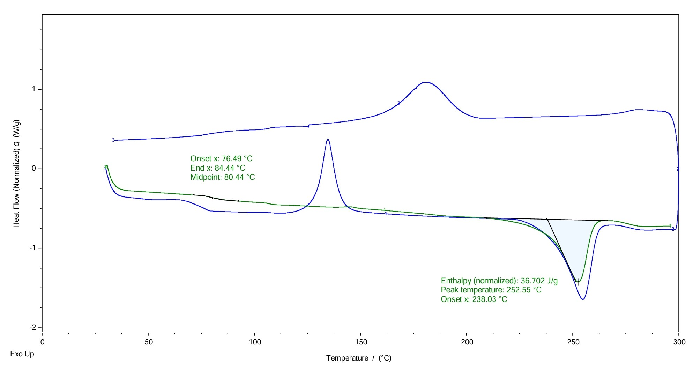
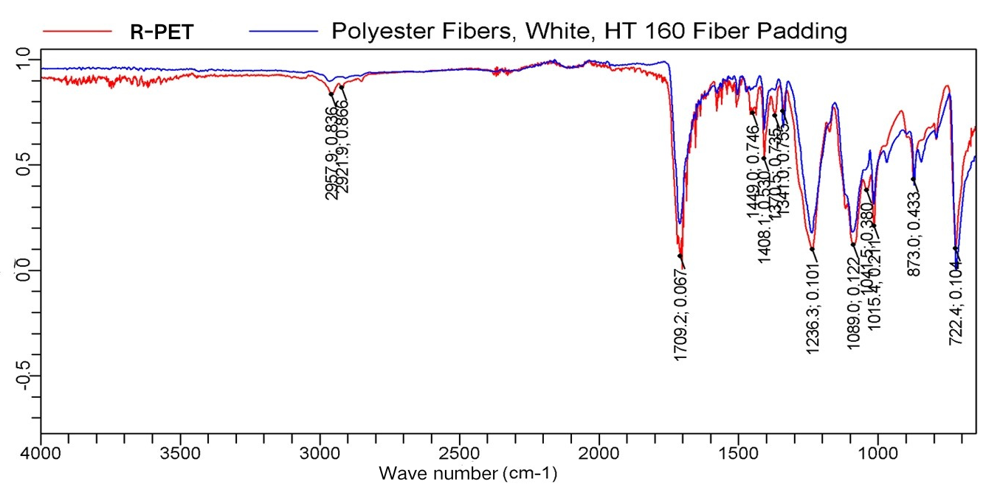
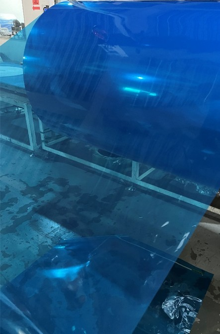

Re-polymerization/Film Stretching/Summary
NotePart 7: Re-polymerization
7. Melt Polycondensation and Product Characterization
7.1 Melt Polycondensation Process Parameters and Reaction System
- Reaction System:
- Monomer Raw Material: Purified BHET monomer obtained from depolymerization.
- Catalyst: Antimony trioxide (\(\text{Sb}_2\text{O}_3\)), with a dosage of \(0.01\% - 0.03\%\).
- Stabilizer: Triphenyl phosphite, with a mass fraction of \(0.03\%\).
- Process Parameters:
- Temperature: \(275 - 288\,^\circ\text{C}\).
- Pressure: Maintained at \(5000 - 6000\,\text{Pa}\) during the prepolycondensation stage; controlled at \(60 - 100\,\text{Pa}\) during the final polycondensation stage.
- Reaction Time: \(4\,\text{h}\).
- Stirring Speed: \(30 - 100\,\text{rpm}\).
- Intrinsic Viscosity Control:
- The intrinsic viscosity (\(\text{IV}\)) of the product can reach up to \(1.003\); for subsequent film blowing and stretching applications, the \(\text{IV}\) is typically stably controlled around \(0.7\).
7.2 Structural and Thermal Characterization
- DSC Thermal Analysis (Differential Scanning Calorimetry):
- Differential scanning calorimetry (DSC) results show that the recycled polyethylene terephthalate (R-PET) exhibits typical thermal transition behavior of polyester, with melting and crystallization behaviors highly consistent with virgin \(\text{PET}\).

- FTIR Spectroscopy (Fourier Transform Infrared Spectroscopy):
- The infrared spectrum in the characteristic functional group region (such as ester carbonyl stretching vibrations) completely matches that of standard virgin polyester (Virgin PET), irrefutably confirming that the obtained high-molecular-weight product is pure PET and shows no difference in chemical structure compared to virgin PET.

TipPart 8: Film Stretching
8. Biaxial Stretching and Mechanical/Thermal Performance of R-PET Films
8.1 Biaxial Stretching Process
- Biaxially Oriented Film Processing: Using a biaxial stretching machine, the recycled R-PET was processed into films of varying thicknesses (including \(75\,\mu\text{m}\) blue film, \(50\,\mu\text{m}\) blue film, and \(25\,\mu\text{m}\) white film) to evaluate its practical processing performance and mechanical reliability.
- Macroscopic Uniformity: The manufactured R-PET film exhibits excellent surface gloss, high transparency, and uniform thickness distribution, confirming that the re-polymerized product possesses outstanding processability suitable for advanced film-grade applications.

: Optical photograph showing the high-quality, continuous R-PET blue film produced from the recycled polymer.
8.2 Mechanical and Thermal Performance Summary
The table below summarizes the comprehensive performance metrics of the R-PET films at different thicknesses, including shrinkage, surface roughness, tensile strength, and elongation at break along both transverse (TD) and machine (MD) directions:
| Film Type | TD Shrinkage (%) | MD Shrinkage (%) | \(Ra\) | \(Rz\) | TD Tensile (MPa) | MD Tensile (MPa) | TD Elongation (%) | MD Elongation (%) |
|---|---|---|---|---|---|---|---|---|
| \(75\,\mu\text{m}\) Blue Film | \(-0.21\) | \(0.96\) | \(0.055\) | \(0.882\) | \(182.8\) | \(159.1\) | \(127.1\) | \(201.0\) |
| \(50\,\mu\text{m}\) Blue Film | \(-0.16\) | \(1.12\) | — | — | \(234.2\) | \(198.1\) | \(145.2\) | \(210.3\) |
| \(25\,\mu\text{m}\) White Film | \(-0.32\) | \(1.26\) | \(0.052\) | \(0.753\) | \(210.3\) | \(158.7\) | \(90.7\) | \(172.3\) |
ImportantPart 9: Summary
9. Comprehensive Summary of the Closed-Loop Recycling Process
- 100% Closed-Loop Recycling (Film-to-Film): Successfully achieved a full-chain closed-loop pathway, turning waste polyester back into high-performance optical/packaging films.
- Ultrafast Depolymerization Efficiency: Reached an impressive 80% BHET yield within 30 minutes, demonstrating exceptional reaction kinetics and process productivity.
- Breakthrough Cost-Effectiveness: Through innovative methodology, the overall operating and production cost is dramatically reduced to only 10% of conventional methods, offering unprecedented industrial and commercial competitiveness.
- Zero Chemical Discharge & Full Circulation: The entire process operates with zero harmful chemical or waste liquid emissions, achieving complete internal circulation and utilization of solvents and resources.
- Significant Carbon Footprint Reduction: Aligns with global carbon-neutrality goals by substantially lowering greenhouse gas emissions compared to virgin polyester production.